Comment se déroule un atelier d'initiation à la magie ?
En brefDurée : 45 min à 1 h 30À partir de 6 ans3 à 5 tours apprisMatériel fourni
Ces ateliers ont pour objectif de faire découvrir et d'initier à la magie nos magiciens en herbe, au moyen de tours facilement réalisables. De quoi étonner ensuite la famille et les amis ! Chaque enfant repart avec ses premiers tours et ses secrets de magicien.
Les tours sont adaptés à l'âge des participants (à partir de 6 ans). Les ateliers se mettent facilement en place dans toutes les structures accueillant des enfants : écoles, centres de loisirs, accueils périscolaires, médiathèques ou maisons de quartier. Francis fournit le matériel nécessaire.
Chaque enfant repart avec ses premiers tours… et ses secrets de magicien. De quoi épater la famille le soir même !
Pour quelles occasions ?
- Écoles et accueils périscolaires
- Centres de loisirs et centres aérés
- Médiathèques et maisons de quartier
- Team building et animations d'entreprise
- Ateliers de 45 min à 1 h 30, matériel fourni
« Un atelier magie fort apprécié par mes élèves au lycée Henri Brisson de Vierzon. Partage et bonne humeur au rendez-vous. Merci encore ! »
— Sophie Dumez, avis Google
Questions fréquentes sur les ateliers de magie
À partir de quel âge un enfant peut-il participer ?
Les ateliers sont conçus pour les enfants à partir de 6 ans. Francis adapte la difficulté des tours en fonction de l'âge du groupe. Les tours sont choisis pour être réalisables par tous, avec un effet « waouh » garanti.
Le matériel est-il fourni ?
Oui, Francis apporte tout le matériel nécessaire (cartes, accessoires, supports). Les enfants repartent avec les objets de leurs tours pour pouvoir s'entraîner à la maison.
Les ateliers sont-ils adaptés aux centres de loisirs et aux écoles ?
Absolument ! Francis intervient régulièrement dans les centres de loisirs, les écoles, les accueils périscolaires et les médiathèques de l'Indre et du Cher. Il adapte chaque atelier au temps disponible (de 45 minutes à 1 h 30), à la taille du groupe (de 8 à 25 enfants) et à la tranche d'âge des participants. Tout le matériel est fourni et chaque enfant repart avec ses tours. N'hésitez pas à contacter Francis pour obtenir un devis gratuit adapté à votre structure.
Que retiennent les enfants d'un atelier ?
Entre 3 et 5 tours selon la durée, qu'ils repartent avec pour s'entraîner. Au passage, ils travaillent la dextérité, la concentration et l'art de présenter quelque chose devant un groupe.
L'atelier peut-il entrer dans un projet d'éducation artistique ?
Oui. Plusieurs écoles et médiathèques de l'Indre et du Cher l'intègrent à leur programme. Francis adapte le format au temps scolaire et au niveau de la classe.
En images
Cliquez sur une photo pour l'agrandir.
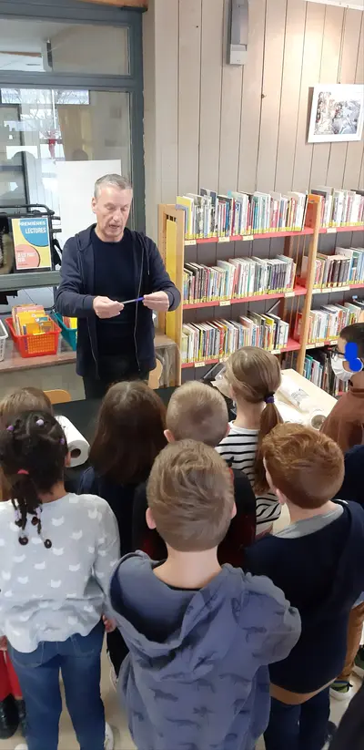
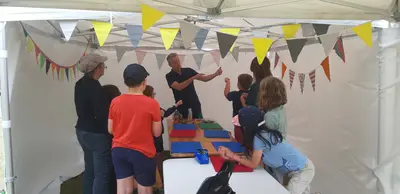
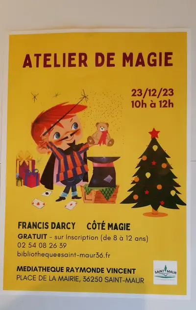
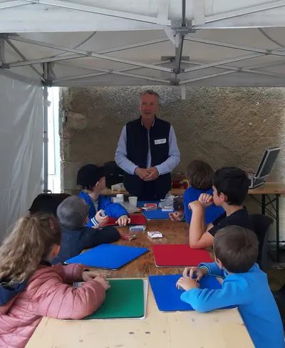
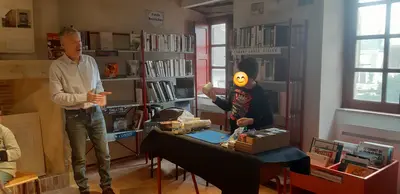
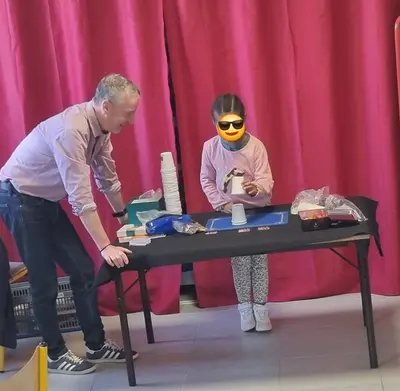
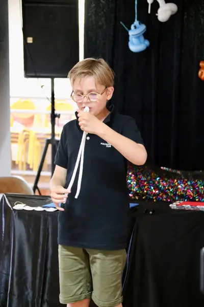
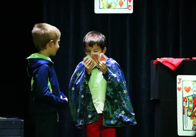
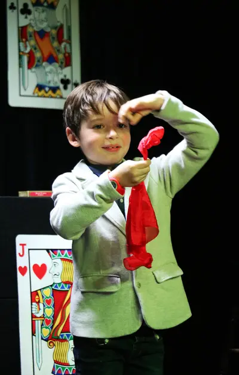
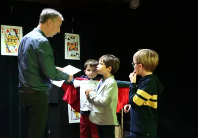
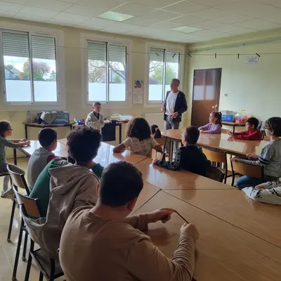
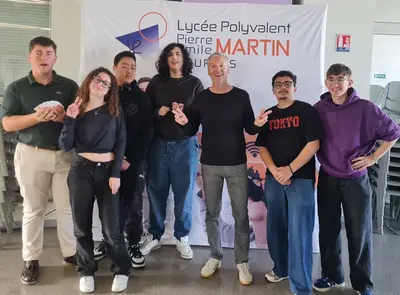
Autres prestations
Envie de magie pour votre événement ?
Parlez-en à Francis : il vous répond personnellement et établit un devis gratuit sous 24 heures.
Issoudun · Indre · Centre-Val de Loire